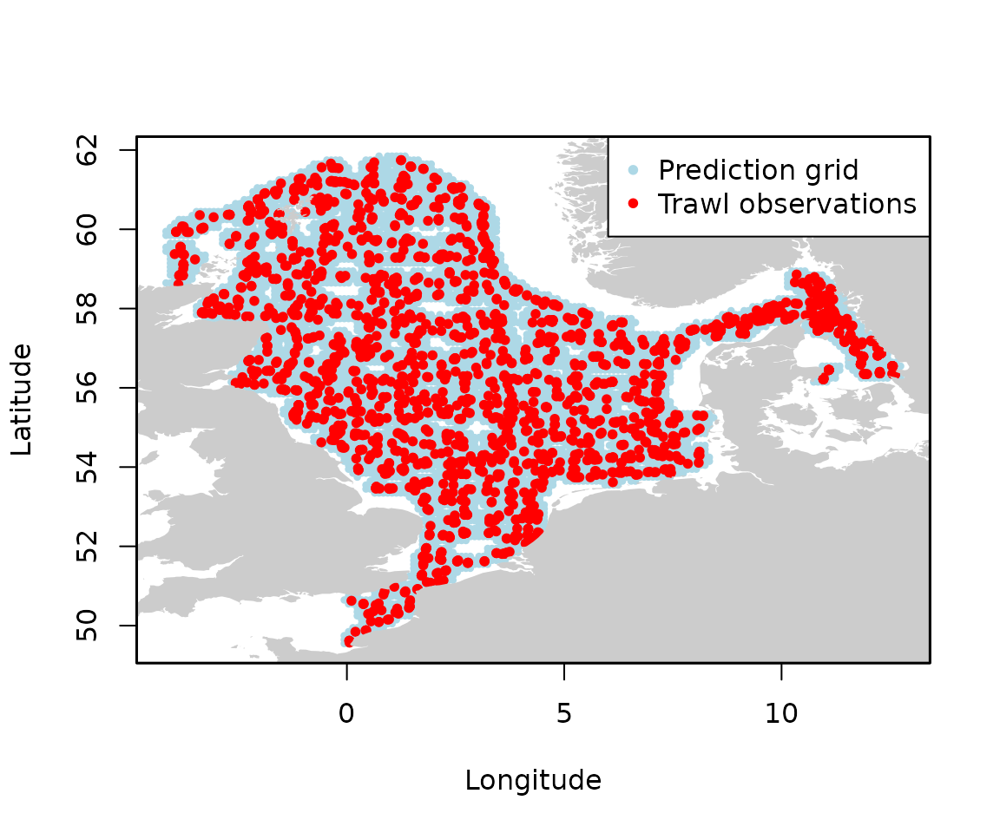

Constructing a prediction grid within a survey domain
survey_domain.RmdThe goal of this section is to demonstrate how to define a spatial survey domain for species distribution modeling. Using trawl survey data from DATRAS and coastline data from Natural Earth, we build a prediction grid that covers the sea area around the observations while excluding land. This grid can then be used as input for spatial predictions within the surveyed area.
Disclaimer
This is just one approach for generating prediction grids for spatial modeling. It is not necessarily the recommended or only method. Decisions such as the grid resolution, boundary construction, and filtering out areas far from observations are subjective and depend on the specific study goals and ecological assumptions. Users should carefully consider the implications of each step and tailor the process to their own data and objectives.
Libraries
library(DATRASextra)
library(sf)
library(rnaturalearth)
library(rnaturalearthdata)
## remotes::install_github("ropensci/rnaturalearthhires")
library(rnaturalearthhires)Download DATRAS, read-in, clean, and get unique trawling events
We start by extracting unique trawl haul locations from the DATRAS data and converting them into spatial points. We use observations dab in the NS-IBTS survey between 2020 and 2023 as an example.
Making the grid
Next, we create a boundary polygon that covers the survey area at sea by building a concave hull around the trawl points, buffering it by 10 km, and removing land areas using coastline data from Natural Earth.
## Enable spherical geometry for accurate distance calculations
sf_use_s2(TRUE)
## Concave hull + 10 km buffer
boundary <- st_buffer(
st_concave_hull(st_union(sf_points), ratio = 0.05),
dist = 10000 # buffer in meters
)
## Get coastline data and prepare land polygon
coastline <- ne_countries(scale = 10, returnclass = "sf")
coastline <- st_transform(coastline, crs = 4326)
coastline <- st_make_valid(coastline)
land <- st_union(coastline)
## Subtract land from boundary to get sea-only polygon
survey_at_sea <- st_difference(boundary, land)
## Plot it
plot(survey_at_sea)We then create a regular grid of square polygons (here 0.1° x 0.1°) that covers the sea area defined above. To ensure predictions focus near actual trawl observations, we filter out grid cells whose centroids are farther than 20 km from any trawl observation. Finally, we extract longitude and latitude coordinates from the filtered grid to create a data frame ready for spatial prediction.
grid_resolution <- 0.1
## Create a regular grid of points (not polygons) covering bounding box of survey_at_sea
bbox <- st_bbox(survey_at_sea)
## Create sequences of lon and lat (x and y) at regular intervals
x_seq <- seq(bbox["xmin"], bbox["xmax"], by = grid_resolution)
y_seq <- seq(bbox["ymin"], bbox["ymax"], by = grid_resolution)
## Create all combinations (full rectangular grid)
grid_points <- expand.grid(lon = x_seq, lat = y_seq)
## Convert regular grid of points to sf object
grid_sf <- st_as_sf(grid_points, coords = c("lon", "lat"), crs = 4326)
## Filter: keep only points inside the sea polygon
grid_sf <- grid_sf[st_within(grid_sf, survey_at_sea, sparse = FALSE)[,1], ]
## Filter: keep only points within max_distance of any trawl point
max_distance <- 20000 ## 20 km
close_to_trawl <- st_is_within_distance(grid_sf, sf_points, dist = max_distance)
grid_sf <- grid_sf[lengths(close_to_trawl) > 0, ]
## Final prediction grid: dataframe with lon and lat
coords <- st_coordinates(grid_sf)
prediction_grid <- data.frame(
lon = coords[, "X"],
lat = coords[, "Y"]
)
## Check dataframe
head(prediction_grid)
#> lon lat
#> 1 -0.06077592 49.54647
#> 2 0.03922408 49.54647
#> 3 -0.06077592 49.64647
#> 4 0.03922408 49.64647
#> 5 0.13922408 49.64647
#> 6 -0.06077592 49.74647
## Plot grid
plot(prediction_grid$lon, prediction_grid$lat,
pch = 16, col = "lightblue", cex = 0.6,
xlab = "Longitude", ylab = "Latitude")
plot(st_geometry(sf_points), add = TRUE, col = "red", pch = 20)
plot(land, add = TRUE, col = "grey80", border = NA)
legend("topright",
legend = c("Prediction grid", "Trawl observations"),
col = c("lightblue", "red"),
bg = "white",
pch = 20,
pt.cex = 1)
box(lwd = 1.5)